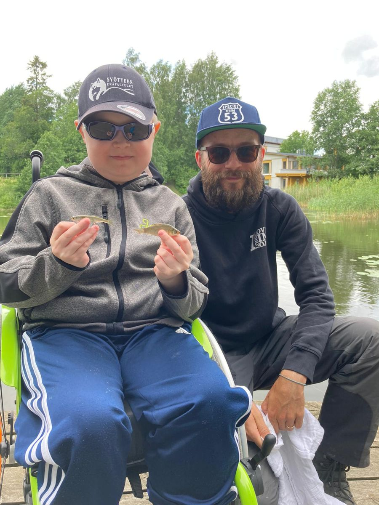
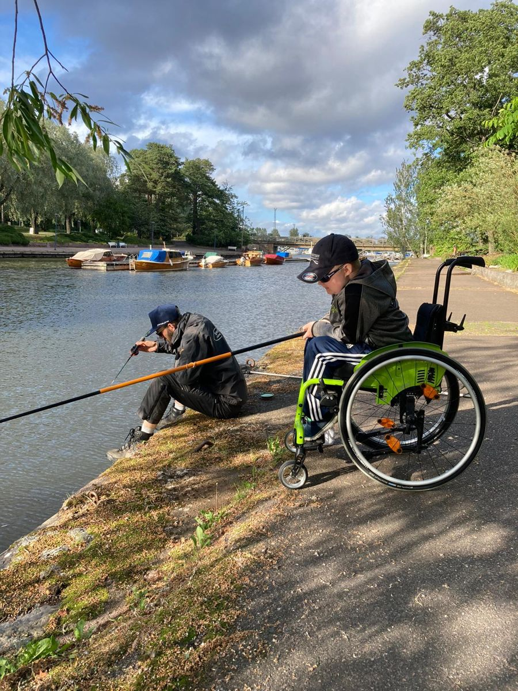
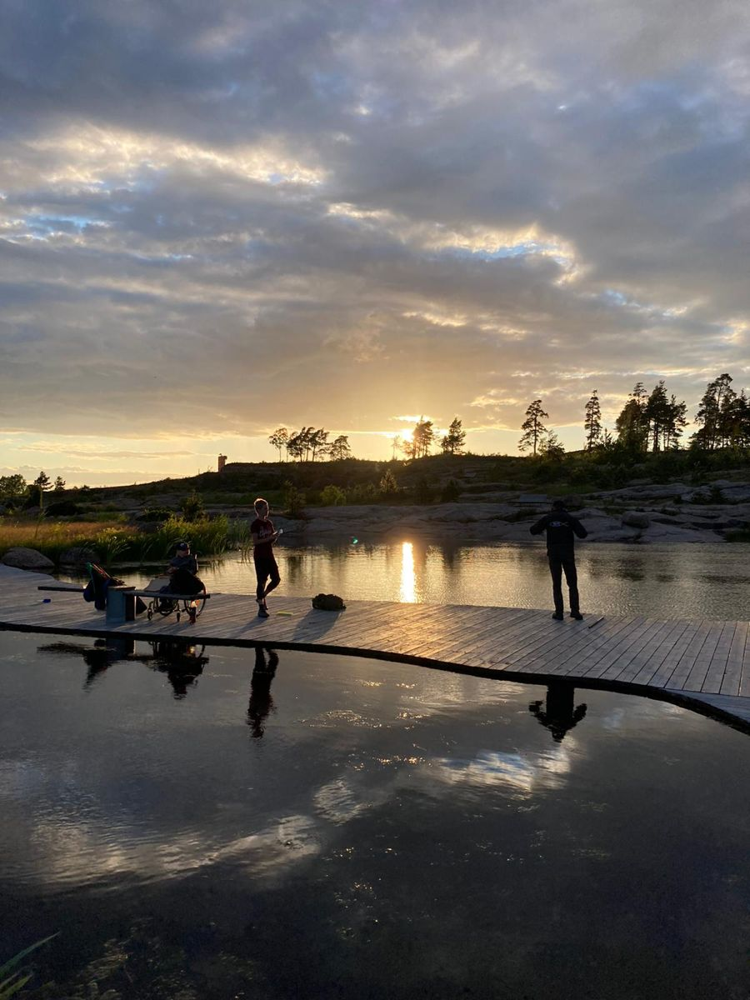
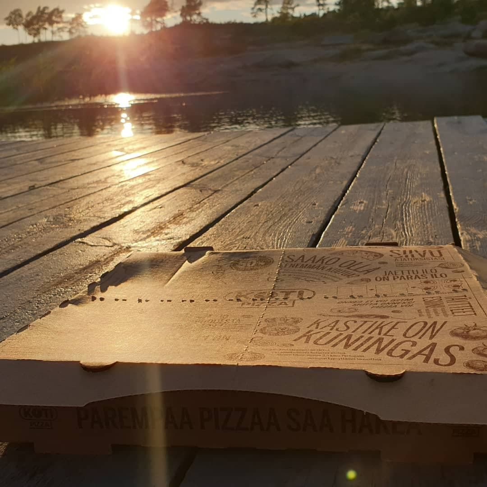
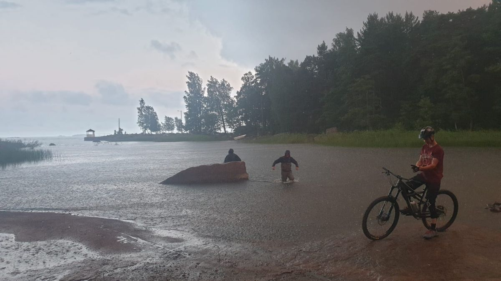
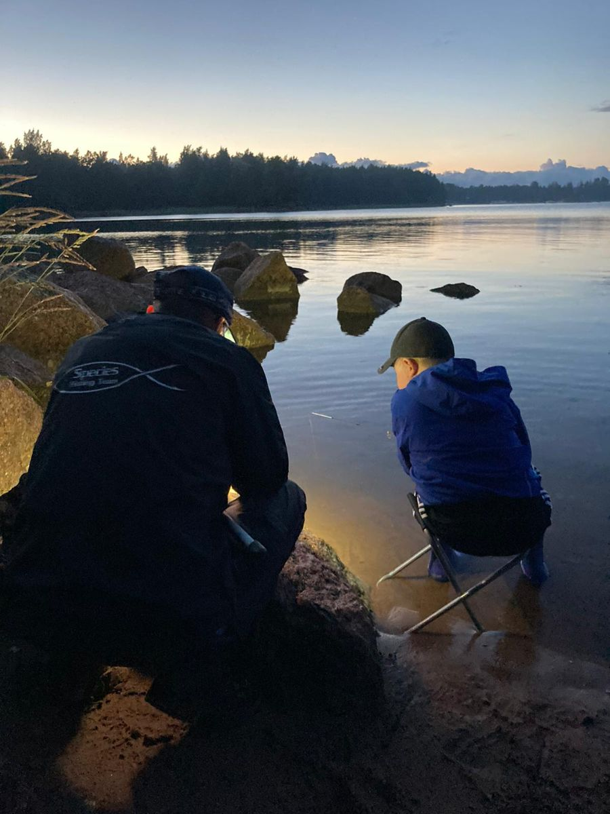

Blogitekstit · Heinäkuu 2020
Kalakingin kanssa fongailemassa

#fongaus antaa hakutuloksena Instagramissa satoja kuvia. Aikoinaan kun kuvia katselin, pisti silmiin yksi tili ylitse muiden. Fishingboywhitweelchair, poika ja isä, joista ensimmäinen kalasti lajeja innokkaasti isä Teemun kannustaessa. Parivaljakon erikoisuus oli, että Jere kalasti ja liikkui pääosin pyörätuolilla. Sinne minne ei pyörätuolilla pääse, mennään isän reppuselässä, kumiveneellä tai jollain muulla tavoin.


Laitoinkin heille johonkin alkuaikojen postaukseen, että jos tänne Helsingin suuntaan tie vie lähden heille ilomielin oppaaksi. Nyt oli tuon lupauksen lunastamisen aika ja sovimmekin tapaavamme Viikon koetilanlammella keskiviikkona 1.7.2020.
Heti ensi hetkestä kävi selville, että nyt on kova kalamies. Annoin Kalamiehelle isolla K:lla ongen käteen ja ei aikaakaan, kun hopearuutana ja allikkosalakka oli ylhäällä. Täsmäiskun ja tapaamisen jälkeen lähdettiin suunnittelemaan illan ohjelmaa kahvikupin ääreen. Suunnitelmat oli selvät, Kotka kutsuu.


Ensitahdit kalojen jahdissa tanssittiin Sapokan kanavalla. Lajirikas kalapaikka, mistä voisimme saada tavoitelistalla olevat turvan, seipin ja mustatäplätokon.
Näytin tekniikan ja nostin siinä samalla ensimmäisen turvan näytille. Tutkimme kalaa yhdessä ja kerroin mistä turvat tunnistavat helpoiten.
Valitettavasti turvat kiersivät Jeren onget ja minun onkeni löysivät. Sain lopulta kolme turpaa, kahdesta eri kohdasta. Säyneiden, sorvien, salakkojen, pasureiden ja ahventen lisäksi myös yksi vieraslaji eli mustatäplätokko nousi kuvattavaksi Jeren toimesta.


Kaappaamme Kotipitsasta retkieväät ja suuntasimme Katariinan puistoon Piikkimonni jahtiin. Seuraamme liittyi myös iltalenkillä oleva Kotkan lahja fongaavalle maailmalle eli Justus.
Ei siinä mennyt kuin hetki ensimmäisen monnin nousemiseen. Kohottoman siima, koukku ja painovirityksen päässä oli matosyötin hyväksynyt piikkimonni.


Olin juuri syömässä viimeistä palaa lihamestaria, kun Justus huutaa:
"Tuolla on kala."
Koho pomppii ja liikkuu hiljalleen pintaa pitkin, Jere asettuu pyörätuolilla asemiin, nappaa siimasta kiinni ja nykäisee.
"Kala!"
Kuuluu Kalakingin suusta. Siiman päässä oleva monni ei luovuta helpolla, äkäisiä spurtteja pitkin laiturin reunaa ja lopulta kala väsähti nousten kalamiehen käsiin. Päätimme yrittää ennen pimeää vielä töröä ja seipiä sokkona Mansikkalahdesta.
Hieman ennen yhtätoista vesisade yllätti meidät. Lopulta rankkasateeksi muuttunut sadekuuro kasteli meidät kokonaan, silti sadeviitat päällä onginta ei tuottanut toivottua tulosta ja lopputuloksena kolme kastunutta fongaria.


Lopulta päätimme lopettaa tai niin Teemun kanssa luulimme.
Minne mennään seuraavaksi, kuului Jeren suusta. Heti kun kuivat vaatteet oli vaihdettu päälle.
No, jos käydään katsomassa vielä yksi hieta- ja liejutokkoranta. Saavuimme rantaan ja otin välineet rantaan, Jere pääsi rantaan tuolille isänsä kantamana.


Hetki siinä meni, mutta lopulta rannan tuntumasta löytyi tokko, mikä oli kalastusetäisyydellä. Pientä hallittua jallittamista ja lopulta liejutokko sätki haavissa.
"Hyvät fiilikset päivästä, parasta oli uudet lajit ja huikeat onnistumiset." -Jere
Täytyy nostaa hattua tälle parivaljakolle, Jere on upea esikuva muille pyörätuolia tarvitseville nuorille ja isä Jere mallitapaus meille muille kalastaville isille. Jere ja Teemu haluavat näyttä Instagram tilinsä kautta, että rajat ovat omassa päässä ja innostavatkin fongauksen ja kalastuksen sekä sähköpyörätuolisäbän kautta muita vastaavassa tilanteessa olevia ymmärtämään elämän ihanuuden.
”Kun toivuimme alkujärkytyksestä, päätimme koko perheen kesken, että vedetään sata lasissa eikä murehdita huomisesta.” -Teemu
Kertoi isä, kun Kehä kolme ja retkemme yhteiset viimehetket lähestyivät.
"Ja siihen asti unelmiini luotan;
On helppo uneksia ihmisen
Siks' paljain jaloin onneani etsin
Ja huolet laulullani haihdutan
Elämä on ihanaa
Kun sen oikein oivaltaa
Ja kun lentää siivin valkein niin kuin joutsen"
- Kulkuri ja joutsen
Elämä on kivaa - ei rajoja! - Life is fun👍 No Limits.
Tätä kirjoittaessa kyynel vierähti poskelle, ei surun vaan ilon.
Tämä Eumerin tekemä yllätys Jerelle kannattaa katsoa.
"Haaveet voi todellakin toteutua, kunhan niihin jaksaa uskoa!
Jeren haaveena oli päästä kesän aikana mahdollisimman paljon kalaan ja nyt nuori kalastaja pääsi aloittamaan kesän kalareissulla toiselle paikkakunnalle. Ja päivän päätteeksi kruunattiin uusi kalakingi!"
Seuraa ennätyksen etenemistä
Pidän kirjaa lajilistasta ja tarkemmasta retkidatasta Google -taulukossa, joka löytyy jokaisesta ennätysyrityksen postauksesta.Tästä linkistä taulukko avautuu uuteen ikkunaan.
Seurantatilanne löytyy myös blogini oikeasta yläreunasta.
Vuoden aikana ennätysyrityksessä kulkee mukaan myös tämä kalataitelija-graaffikko Sakke Yrjölän suunnittelema SPECIES FIN 53 -merkki.
Paitakulmassa painatin pipoon ja lippikseen saman merkin. Tavoitteeni on saada aikaiseksi 53 saaliskuvaa tekstin alussa tekemääni taulukkoon joissa kaikissa kuvissa näkyisi tuo kyseinen tunnus.
Paitakulma on Suomalainen perheyritys, joka haluaa panostaa laatuun ja asiakastyytyväisyyteen. Tutustu yrityksen palveluihin tästä.